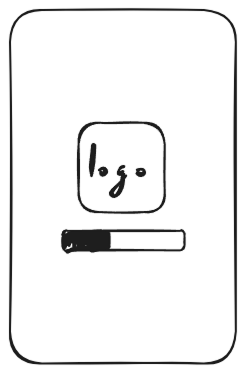
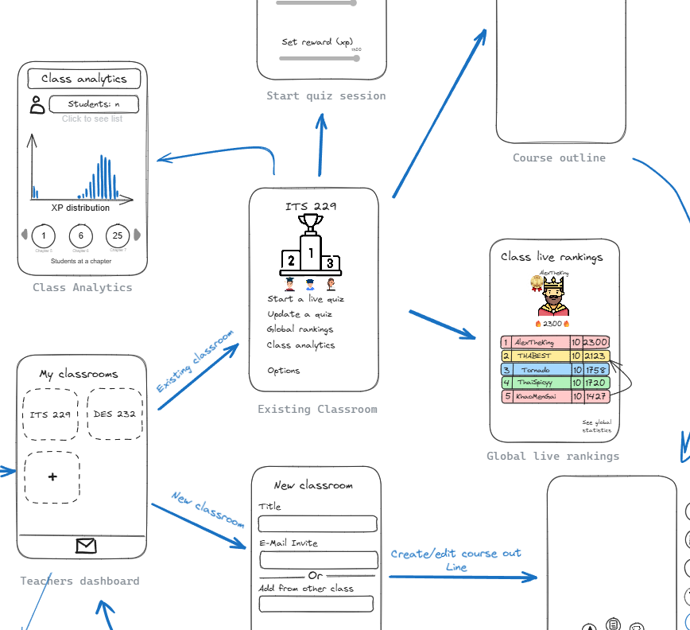
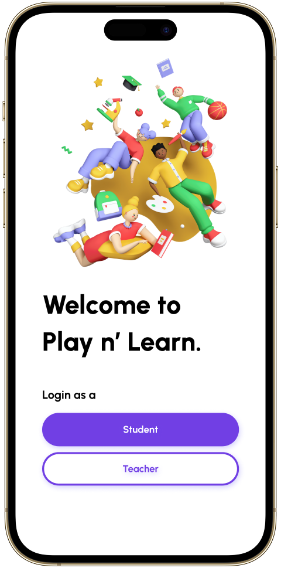
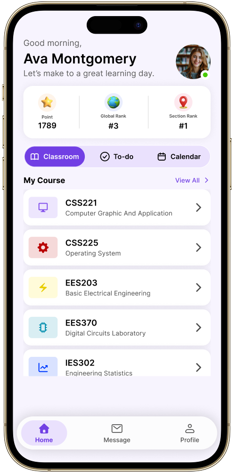
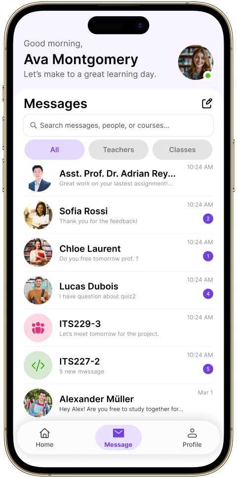
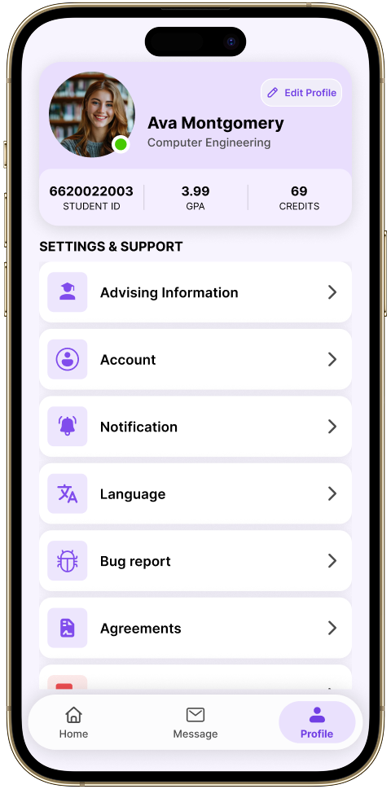
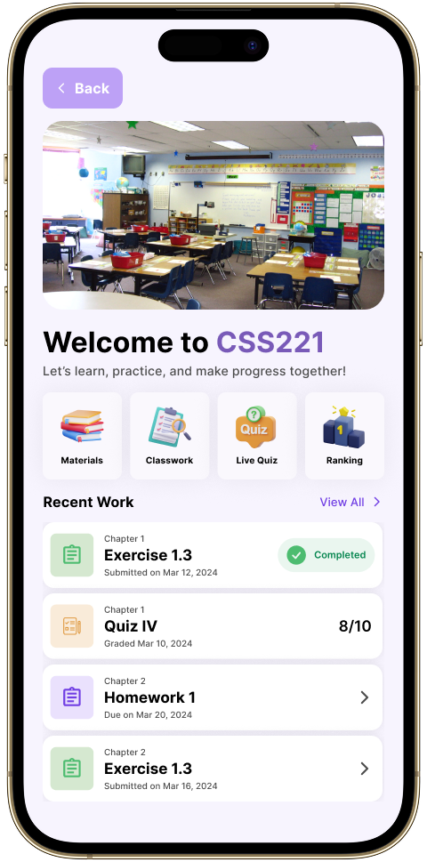
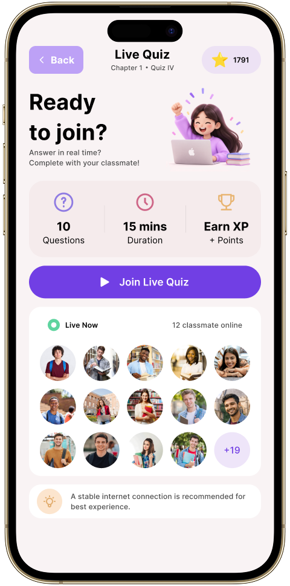

Discover & Define
Feb 21 - Mar 12
Research · Survey
Understand users, identify learning problems, and establish
product requirements.
EDUCATION · UX RESEARCH & DESIGN
A gamified learning experience connecting the way teachers teach with the way students learn.
Play N' Learn is a gamified learning application prototype inspired by progression-based learning experiences such as Duolingo. The project explores how game mechanics, structured learning paths, and interactive activities can make digital learning more engaging and motivating. Designed for two distinct user groups, Students and Educators, the platform provides dedicated experiences for each. Educators can create classrooms, organize learning content, build quizzes and activities, and monitor student progress, while students can follow structured learning paths, complete activities, and receive instant feedback throughout their learning experience.
Feb 21 - Mar 12
Research · Survey
Mar 13 - Mar 27
User Journey · Flow
Mar 28 - Apr 10
Think-Aloud Testing
Apr 11 - May 4
Feedback · Figma
May 5
Final Presentation
How might we make learning more engaging for students while giving educators clearer insight into progress?
Real people. Real challenges. A brighter learning future.
Many students lose interest over time, especially without immediate rewards or a sense of progress.
EngagementTraditional digital learning often feels one-dimensional, with limited interactivity or real-world connection.
ExperienceEducators often lack clear, real-time insights into student progress, making it difficult to provide timely support.
VisibilityWe used surveys, relevant studies, and similar-product analysis to understand learning behaviors, identify opportunities for a more engaging learning experience.
Learning preferences
& teaching methods.
* Based on 34 survey responses.
Primary data from learners.
Insights from academic research.
Reviewed existing learning apps.
67.7% of participants preferred active learning , suggesting that students respond better to more interactive and participatory learning experiences.
Early wireframes helped define the core student and educator flows before moving into visual refinement.
Explore the complete wireframe flow.

We conducted think-aloud usability testing to identify usability issues and uncover opportunities for refinement.
3 Students, 1 Educator
Moderated sessions

It was easy to follow, but some parts were unclear at first.
Teacher participant
Several participants found the mobile interface overwhelming on smaller screens.
Educators wanted more actionable insights, such as student progress trends over time.
A few participants hesitated on key actions, such as joining a class or submitting work.
Based on insights from usability testing, I refined the design into a clean, intuitive, and consistent high-fidelity prototype.

Login

Home

Messages

Profile

Classroom

Live Quiz
Key challenges I faced during the project, how I overcame them, and what I learned for future improvement.
Balancing the needs of both teachers and students while keeping the interface simple and easy to use.
Teachers need efficient control, while students need simplicity.
Managing materials, quizzes, and scores without overwhelming users.
Had to iterate quickly with limited user feedback.
Through this project, I gained valuable insights that will help me design better and more inclusive products in the future.
Real feedback early on helped identify key usability issues.
Simplifying the design through multiple iterations made the experience more intuitive.
Considering both teacher and student viewpoints led to a more balanced solution.
Supporting documents for this project.